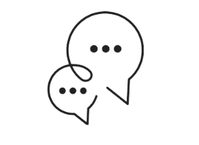

<div class="flex flex-nowrap">
  <div class="absolute left-0 flex flex-nowrap " style="background-color: #DFD7DC; width: 400px; height: 80px; position: relative; overflow: hidden;">
    <!-- Le petit cercle à gauche avec un clic -->
    <div class="absolute" style="top: 22px; left: 14px; width: 45px; height: 45px; position: relative; overflow: hidden;" (click)="toggleParametre()">
      <svg fill="#000000" version="1.1" id="Capa_1" xmlns="http://www.w3.org/2000/svg" xmlns:xlink="http://www.w3.org/1999/xlink" width="30px" height="30px" viewBox="0 0 299.021 299.021" xml:space="preserve"><g id="SVGRepo_bgCarrier" stroke-width="0"></g><g id="SVGRepo_tracerCarrier" stroke-linecap="round" stroke-linejoin="round"></g><g id="SVGRepo_iconCarrier"> <g> <g> <path d="M292.866,254.432c-2.288,0-4.443-1.285-5.5-3.399c-0.354-0.684-28.541-52.949-146.169-54.727v51.977 c0,2.342-1.333,4.48-3.432,5.513c-2.096,1.033-4.594,0.793-6.461-0.63L2.417,154.392C0.898,153.227,0,151.425,0,149.516 c0-1.919,0.898-3.72,2.417-4.888l128.893-98.77c1.87-1.426,4.365-1.667,6.461-0.639c2.099,1.026,3.432,3.173,3.432,5.509v54.776 c3.111-0.198,7.164-0.37,11.947-0.37c43.861,0,145.871,13.952,145.871,143.136c0,2.858-1.964,5.344-4.75,5.993 C293.802,254.384,293.34,254.432,292.866,254.432z"></path> </g> </g> </g></svg>    </div>
    <!-- Insérer l'image au deuxième emplacement -->
    <div class="absolute" style="right: 0; top: 22px;">
      
    </div>
    <!-- La barre ecrit dessus parametre -->
    <div class="rounded-lg" style="left: 15px; top: 15px; background-color: #C9B2C9; width: 290px; height: 50px; position: relative; overflow: hidden;">
      <div class="flex justify-center items-center h-full text-black">
        Settings
      </div>
    </div>
  </div>
</div>
